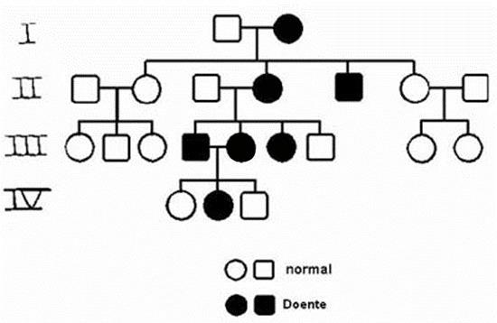

01 – O ano de 2021 foi marcado por um aumento significativo do desmatamento no Brasil, causado principalmente por queimadas ilegais, principalmente na Amazônia e no Pantanal. Os gases liberados pelas queimadas, assim como o próprio desmatamento são responsáveis por agravar o aquecimento global. A respeito do tema, assinale a alternativa incorreta:
a) A queima de combustíveis fósseis proveniente de atividades industriais amplifica o aquecimento global, assim como as queimadas.
b) Além dos gases do efeito estufa, como CO2 e NH4, as queimadas liberam gases que reagem com a água e provocam chuva ácida, como o SO2 e o NO2.
c) O desmatamento, ao diminuir o número de árvores, diminui a taxa de absorção de gás carbônico, fazendo com que haja um agravamento do efeito estufa.
d) O efeito estufa é um fenômeno natural do planeta, responsável pela retenção do calor e essencial para a existência da vida. Quando há a liberação de gases do efeito estufa, esse fenômeno é agravado e a retenção de calor aumenta, provocando o aquecimento global.
e) O objetivo do desmatamento, na maior parte dos casos, é a liberação de espaço para atividades agropecuárias. Além dos gases liberados pelo próprio desmatamento – no caso de queimadas – a pecuária também é responsável pela liberação de gases amplificadores do efeito estufa.
02 – Heredogramas são representações de manifestações genéticas em um mesmo grupo familiar, evidenciando aqueles indivíduos que apresentam determinada característica. Os heredogramas possibilitam determinar o genótipo de alguns indivíduos de acordo com as informações existentes a respeito de outros indivíduos da família.  De acordo com o heredograma acima, marque a alternativa correta:
a) É possível afirmar que esse heredograma representa uma doença autossômica recessiva.
b) Não é possível afirmar o genótipo exato do homem afetado da geração II, pois ele não apresenta nenhum descendente.
c) Um indivíduo portador de um alelo que caracteriza a doença necessariamente irá manifestar a doença.
d) Em uma doença autossômica dominante, apenas os indivíduos homozigotos para o alelo dominante manifestam a doença.
e) O indivíduo afetado da geração I é uma mulher em homozigose recessiva.